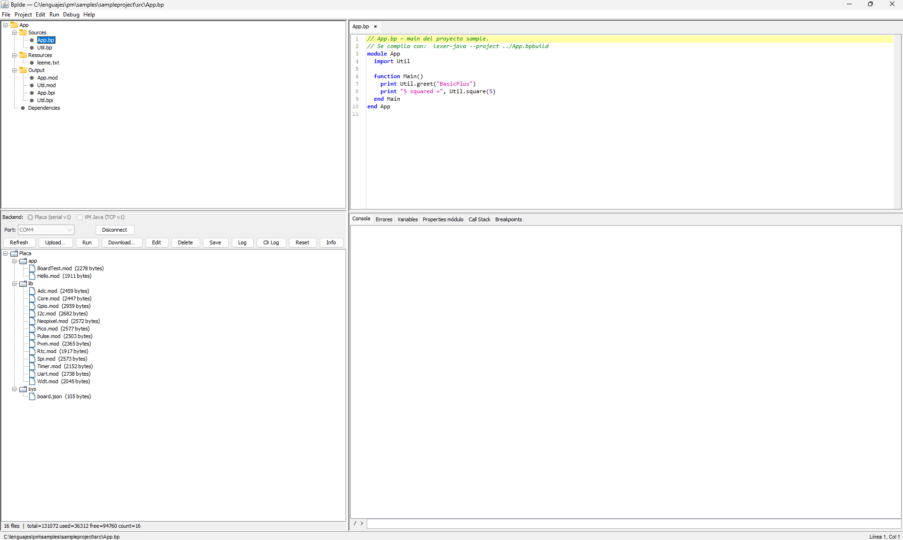
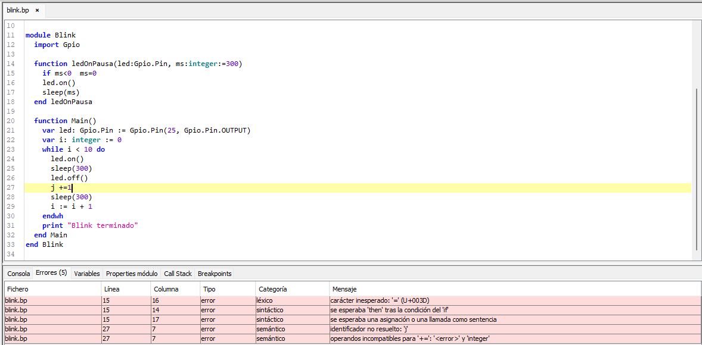
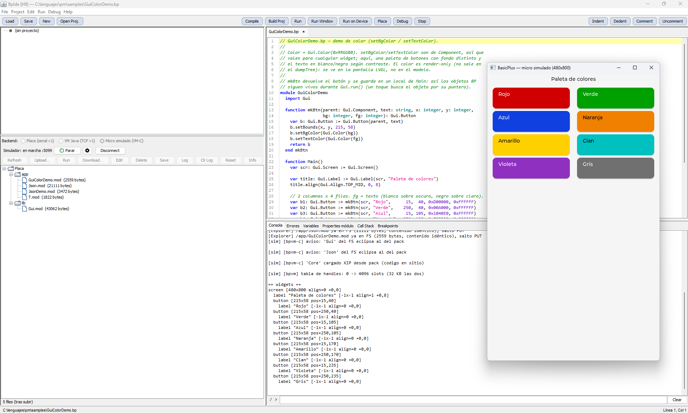
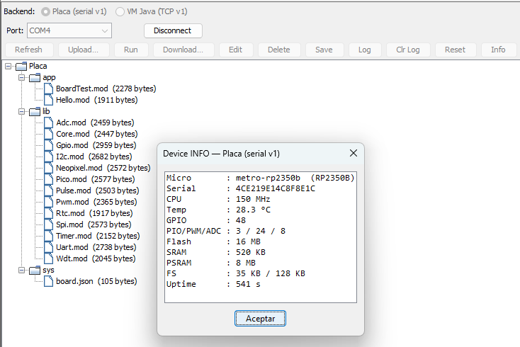
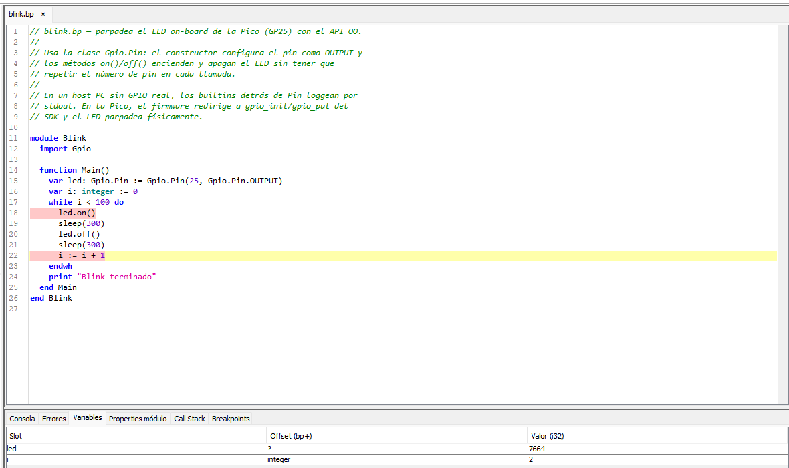

BasicPlus — IDE guide
BpIde is the BasicPlus development environment: editor, compiler, local and remote execution, board explorer and debugger.
1. Starting the IDE
There is no installer: unzip it wherever you like and run it. The only thing you need already in place is Java.
bpide.bator, by hand:
java -jar BpIde-8.1.jar
Next to the .jar travel the folders the IDE finds by itself,
with nothing to configure: the pack library
(packs/, §10), the simulated micro (bin/, §6.1), the
documentation (docs/, what Help →
Documentación opens with F1) and the boards' firmware images
(firmware/). Move the bare jar somewhere else and it stops
finding them — what you move is the whole folder.
2. The window

Four areas:
- Project tree (top-left): sources, resources, compiled output and dependencies of the open project.
- Editor (top-right): tabs with BP syntax
highlighting, or JC in a
.jc(§4.1); the current line is marked and the position shows in the status bar. - Board explorer (bottom-left): the backend selector (Placa (serial v1), Placa (red), VM Java (TCP v1) or Micro simulado (VM-C): the board by cable or over the network, the Java VM over TCP, or the simulated micro), the port or the address, the Connect button and — once connected — the micro's file tree with its button bar.
- Console and debugging (bottom-right): the
Consola, Errores, Variables,
Properties módulo, Call Stack and
Breakpoints tabs. Below, the
/ >prompt of the micro command console (§7).
Above them, the toolbar. On the left, files and project; in the middle,
execution: Compile, Build Proj, Run,
Run Window (runs on the PC on the VM-C, with its window — for
programs with a graphical interface), Run on Device, Placa
(board, §9), Entorno (environment, §9.3), DAO build (the
project's DAOs from its @BD), Debug and Stop;
on the right, indent and comment the selection.
3. Projects

Project → New Project creates the standard layout;
File → New adds loose files. A project is described by
its .bpbuild/.bpproject (JSON, see the
reference §16) and organized as:
- Sources — the project's sources,
.bpand.jc(§4.1) (in the screenshot:App.bpandUtil.bp). - Resources — data files that Run copies to the micro as-is (configuration, tables…).
- Output — what the compiler produces: the
.modfiles (bytecode in format MOD9, with their interface inside — and, if the project usesnative, the machine code too: it goes inside, not in a loose.mdn), and the.packif the project packages (§10). - Dependencies — resolved imported modules.
4. Editing and compiling
Run → Compile compiles the file or the project; diagnostics show up in the Errores tab with their file, line, column, kind (lexical / syntactic / semantic) and message, separating errors from warnings. Double-clicking a row jumps to that position in the editor.

The compiler does not stop at the first error and does
not drown in cascades: it recovers at statement/function level and keeps
going, so a single pass surfaces the real errors of the whole module. In
the screenshot, a lexical+syntactic error (a = where a
:= belongs — the language assigns with :=)
coexists with an undeclared identifier in another function further down:
the first failure does not hide the second. Spurious cascades are pruned
(an already-faulty operand produces no derived errors) and, if there were
very many, they are capped with an "and N more".
4.1 JC: .jc files and translation
JC is BasicPlus with the syntax of Java and C# —braces, semicolons, the type before the name— on
the same compiler and the same bytecode: a .jc compiles to a .mod just like a
.bp, and runs the same on the PC and on the board. The language has its own volume,
JC, BasicPlus with braces; here, what the IDE does with it.
- Opening and saving. File → Load opens
.bpand.jcfiles («BasicPlus (*.bp, *.jc)»), and the project tree shows both under Sources. The editor highlights each file according to its extension, and a.jcfolds by braces. A new file (File → New) is highlighted as BP until you save it: as.jc, it switches to JC; and if you save it with no extension, the IDE adds the extension of its tab's language. - A project with its main in JC. It is enough for the main's source to be
<main>.jcinstead of<main>.bp: compiling, running (also in the window and on the board) and debugging find it by themselves. New Project creates it in BP; to move it to JC, translate it (below), save it as.jcand remove the.bp. If both are there, the IDE does not guess: it says so before compiling anything («El main está dos veces, App.bp y App.jc: el proyecto no sabe cuál compilar. Quita uno de los dos.», the main is there twice: remove one of them). The modules the main imports go, for now, in.bp: that is the source the compiler looks for. - Errors and the debugger, as with a
.bp: the Errores tab gives each one with its line in the.jc, and breakpoints go by file and line (§11).
Edit → Traducir a JC and Edit → Traducir a BP (translate to JC, to BP) translate
the file in the active tab: they save it (if it is new, they ask where) and open the translation in a new,
unsaved tab —«(Saludo.jc, sin guardar)»—, highlighted in its language; when you save it, the extension it
gets by default is its own. The original does not change. Comments do not travel: the compiler
drops them when it reads the source, and the translation comes out without them. What cannot be translated —a
source with errors (to JC it must also compile: it is translated from the already analysed program) or something
the other language does not have— the Console says, with the reason («no se traduce: …», not translated), and
nothing is opened. The Saludo of §7, with a comment, and what Traducir a JC gives:
module Saludo
// greets whoever is named when it is run
public function Main(arg: string := "mundo")
print "hola, " + arg
end Main
end Saludomodule Saludo
{
public function void Main(string arg = "mundo")
{
println("hola, " + arg);
}
}
And Traducir a BP on that JC gives back the first one, without the comment. Outside the IDE, the compiler
options --escribir-jc and --escribir-bp do the same (in the
JC volume).
5. Running (and stopping)
- Run → Run: runs on the PC, on the Java VM (local daemon). The program output goes to the Console.
- Run → Run on Device: uploads the
.modto the connected board (with any missing dependencies and the project's resources) and runs it there; the output streams back live to the Console. - Run → Stop (Ctrl+F2): aborts the running program —
local, in the Run Window window or on the board — without
resetting anything. On the board it
is a cooperative KILL: the VM dies cleanly and the micro keeps
responding, also when the program is inside a long
nativefunction. The program ends with exit code 130. Thekill(orstop) of the explorer's command line does the same. Stop waits for the answer and the Console says what happened: that the board (or the local VM) stops the program —«Stop: la placa para el programa»—, that none was running, or that it does not answer.
One program at a time. While one is running, Run,
Run Window, Debug, Run on Device and the command line's
run do not launch another: they say so, and you have to stop it first with
Stop. Compiling is allowed. And when the IDE is closed, whatever it has running on the PC
stops. A Run the board does not accept says so at once («la placa rechaza el RUN: …», the
board rejects the RUN), instead of waiting for a program that has not started.
Where it runs on the PC. The Java VM has its flash, like a
board, with its /sys, /lib, /app and
/data (§6): the .basicplus\flash folder of your
user. An absolute path in the program
("/data/Termostato/lecturas.csv") goes inside it. The program
runs in app\<project> of that flash, with the name the board
would give it (/app/<project>), or in app if there
is no project (the Console names it when it starts: «la carpeta del programa: …»,
the program's folder), and the folder stays when it ends: what the program saves
with a relative path ("lecturas.csv") is still there on the next Run,
and you can look at it. On the board, instead, that same path goes to the root of
the flash (/lecturas.csv), not to the program's folder: for it to save
the same on the PC and on the board, a /data path
("/data/Termostato/lecturas.csv";
reference §13.11). With a project, the IDE
deletes from that folder the .mod, .bpi and
.dbg files it no longer uploads («sobraba X.mod: borrado», left over:
deleted); what the program writes, never. The project's resources are
not copied: if the program needs them on the PC, make it an application pack (§10).
When a program ends —fine, with an error or with Stop— its objects are destroyed and each one releases what it holds: a PWM stops, the pins and the buses are free again (manual §9.4b). Whatever no object releases, the board releases at the end of the RUN, and the outputs go back to how they were after reset. That destruction has a 3 s limit: whatever does not finish, the board releases, and the log says so.
Dependencies are not re-sent. Before uploading, the IDE
asks the board about every module the program imports, and the board looks
for it where it would load it from (§10.2). A module of the program
is uploaded if it is missing, if the board has it in an older format, or if,
being the same format, its CRC differs (you have just recompiled it); if the
board has a newer one, the board's copy stays. One from the standard
library follows the rule for libraries: what the program asks for is a
minimum version —that of the .mod it was compiled against— and
if the board has that one or a later one, in the same format, it is valid
even if it is another build (another CRC): it is not uploaded. Only the
missing one, the one in another format or the one older than the minimum is
uploaded, and it goes to /lib (the stdlib travels in the board's
image —not the whole of it in every image— or in the Stdlib.pack,
§10.3). The Console says where each one is loaded from (path and CRC) and why
it is uploaded or not, and warns if that copy is not the one the project
would put there — when something fails because of a dependency, that line
is the one that tells where the module came from.
On completion, the Console closes with the exit code, the reason and
the execution time — exit 0 (OK) en 94 ms
(in seconds from 10 s up). The time is that of the execution, with the
module already loaded, and the Java VM and the boards measure it alike.
What each code means: help error (§7).
If it ends with an uncaught error, the Console also says
where, on the board and on the PC: the line of the error and the
calls that led to it, up to 8, each with its file —en Prueba.bp:23,
llamado desde Prueba.bp:9 (at…, called from…)—. The board does not have
the .dbg: it gives positions, and the IDE translates them with the one in
the output folder. The frames inside the standard library stay as positions
(Collections+1815); and on the board, if the error starts inside a
compiled native function, the line is that of its caller —to see its
own, remove the native— (manual §11).
If the program asks the user for data with IO.prompt, the
IDE pops a form and execution pauses until you fill it in: text fields,
numeric fields, checkboxes and drop-downs as declared by the program.

IO.prompt is a development utility of the Java VM (PC): the
form is drawn by the IDE. It is not available on the micros — there
IO.prompt throws a catchable RuntimeError, so
wrap it in try/catch if your program must also run on the
board.
5.1 native (AOT): the C compiler
If the program uses function native, on Run on Device the
IDE compiles those functions to machine code and fuses it inside the
.mod itself: a single file is uploaded and
there are no two files that can drift apart. That step needs a cross C
compiler — and it does not ship with BasicPlus: it is
not ours, so you install it separately. Which one depends on the board:
| Boards | Compiler | Where it comes from |
|---|---|---|
| RP2350 (Pico 2, Metro) and STM32 | arm-none-eabi-gcc |
Arm GNU Toolchain — and if you already use STM32CubeIDE or the pico-sdk, you already have it |
| ESP32-P4 | riscv32-esp-elf-gcc |
ships inside ESP-IDF (Espressif's install guide) — version 6 or later |
| ESP32-C3, ESP32-C5 and ESP32-C6 | riscv32-esp-elf-gcc |
the same one from ESP-IDF: they are RISC-V without FPU, and the
IDE compiles what suits them (target riscv-imc, ABI
ilp32) because the board tells it its recipe |
| ESP32-S3 | — | in this version native runs interpreted on the S3 |
About ESP-IDF, to be clear. Programming in BasicPlus does
not require ESP-IDF — you can own a P4, a C3, a C5 or a C6 and write,
upload and run without ever seeing a line of C. ESP-IDF is needed
only if you want function native on those boards,
and then you install it separately following Espressif's guide. And make it version 6 or
later: the P4 needs a RISC-V compiler that earlier versions do not
carry properly, and building with an old one gives you trouble rather than a
clear error. If you have several installed, the IDE takes the newest.
For ARM, if you install it by hand:
- Windows — the Arm GNU Toolchain (arm-none-eabi) installer from developer.arm.com. If you already use STM32CubeIDE or the pico-sdk, you already have one.
- Linux —
sudo apt install gcc-arm-none-eabi(Debian/Ubuntu) or your distribution's equivalent package.
The IDE autodetects it (the standard Arm GNU Toolchain
install location, or the PATH). If it cannot find it, set it
manually in Project → AOT (toolchain)…: the path to
arm-none-eabi-gcc and the bpgenvm-c root (it
provides the runtime headers), each with its own Detectar
button. That setting is per machine; which projects use AOT (and for
which board) lives in the project's .bpbuild (the
"aot" section). The RISC-V one is looked for among the ESP-IDF
tools (the newest version) or on the PATH.
The compiler is optional, and this is the point: if it is not there, nothing breaks. The IDE warns and those functions run interpreted — same behaviour, less speed in compute kernels. Everything else (compiling, uploading, running, debugging, packs, the graphical interface) works the same without installing anything.
The board's image and the IDE, of the same version. The machine code the IDE generates talks to the image through an interface that changes between versions: the board states its own (the ABI nativo line of the Info, §8) and, if it is not the one this IDE generates, the IDE does not compile the native code —the board's loader would reject it—: it says so in the Console with the remedy (reflash the board with this version's image or, if the image is newer, bring the IDE up to date) and the functions run interpreted.
6. Connecting to the board
In the Explorer: pick the serial board (v1) backend, the micro's COM port and press Connect. The tree shows the device's internal filesystem:
/app— your programs (uploaded.mod)./lib— the standard library embedded in the firmware. The firmware restores it by itself on every boot, module by module: if it is missing, if the one there is an older version, or if it is the same version but different (size or CRC); a newer one —the one the IDE uploaded with a program that needs it— is left alone (except on the STM32, which empty/libon every boot and restore it from the image: what the IDE uploaded does not survive a restart, and the next Run uploads it again). And with theStdlib.packburnt, whatever the pack serves with the same bytes leaves/lib: it is loaded from the pack, from flash, without spending RAM (§10.3). Whatever is in/appis never touched./sys— configuration:board.json(board identity),device.json,auto.txt(autorun, §12)./data— your programs' data, each one in its own folder (/data/<project>), like Windows'ProgramData. The IDE never touches it. In/app/<project>, on the other hand, the IDE deletes on Run what it no longer uploads: what a program wants to keep is better here.
Do not upload copies of the standard library to /app.
When loading, /app wins over /lib: an old
Gui.mod forgotten in /app shadows the firmware's,
and the symptom points somewhere else. Since V7, if /lib holds a
different one, the Console warns in the program's output (aviso: 'Gui'
cargado desde /app, tapa al de /lib). If you update the firmware, clean
/app of any module that is not yours.
The button bar operates on the selected file: Refresh, Upload, Run, Download, Edit (opens an editor over the micro's file — also via double click), Delete, Save (persists the FS to flash), Log/Clr Log (the firmware's persistent log), Reset and Info (§8). The panel's bottom bar summarizes the FS: files, used and free bytes.
The tree paints in red the .mod, .mdn
and .pack files the VM could not load —damaged, or in a format it
does not understand—, and the reason shows when you hover over it («La placa no
lo cargaría: …», the board would not load it). Files go up and down in chunks,
of the size the board states; and an upload that is cut —the cable goes, another
upload arrives, a RUN— is deleted on the board: the previous
version does not stay there passing itself off as the new one.
Over WiFi. A board with WiFi —the P4 (with radio=c6 in its
environment), the S3 and the C5— works the same without a cable: backend Placa (red)
(board, network), its IP and Connect. If you do not know it, Buscar en la
red (search the network) asks the whole network which boards are there and puts in the IP
of the one that answers (if several answer, you pick from the list). The IDE remembers the last
one, and if you connect by cable it learns its IP. The board listens on both at once and talks to
whoever sent it something last, so you can come in over the network with a program running and
stop it. If the board disappears, because the network drops or it is switched off, the IDE says
so within about 15 s («se ha perdido la conexión con la placa», the connection to the board is
lost) and goes back to disconnected; a program that was running may still be running on the
board.
The board's WiFi is off unless told otherwise, and to come in over the network it
has to be on. You set it up with the explorer's WiFi button (the first time, by
cable), which writes /sys/wifi.json: the network and its password, the country,
Encenderla al arrancar la placa (switch it on when the board boots) and Apagarla sin
actividad (switch it off with no activity), the seconds after which it switches itself off
(600 unless changed; 0, never). An open connection, the IDE's too, counts as activity; but if it
switches off with the IDE disconnected, there is no coming back in over the network until the
board is reset: to work with the IDE over the network, 0. What is saved takes effect when the
board is reset. The whole file, and the wifi key of the environment, which overrides
the checkbox, in the reference §14.19. The password stays
in clear on the board, and the board accepts any computer on the network: use it on a network you
trust.
The same panel serves the Java VM (TCP v1): point it at a local or remote daemon and you get the same tree and the same buttons — the protocol is identical.
6.1 The simulated micro: a board that does not exist
The Micro simulado (VM-C) backend is a make-believe board running on your PC. It is not a silicon emulator: it is the same VM-C that runs on the micros, compiled for the computer and served over TCP — the IDE treats it exactly like a real board. Same file tree, same buttons, same debugger.
It is useful for what you would expect — trying things without the board in front of you, or while it is busy — but above all for what the plain PC VM cannot do: the simulated micro has a screen. A program with a graphical interface shows up in its window, painted by the same LVGL that paints on the board.

In the screenshot, GuiColorDemo running on a simulated micro
with a 480×800 screen — the size lives in its configuration,
not in the program. Bottom left, the backend selector with the three
options of the time (today there is one more, Placa (red)) and the
simulator «en marcha :5099»; and in the console, two lines
telling where each module came from: Gui, from the filesystem,
eclipsing the one in the pack (§10.2), and Core, loaded
XIP from the pack — the code runs where it sits, without being
copied.
Starting and stopping it is done from the panel itself: Arrancar starts it and Parar stops it; the gear button opens its configuration. And that is where it gets interesting — the "silicon" is configurable:
- RAM and PSRAM — to try your program with the memory the target micro will actually have, not the PC’s. It is the cheap way to find out it does not fit.
- Flash — the volume size, split the same way as on a board (§9.2).
- Screen — width and height, or no screen at all. You can
check how your interface looks at 480×320 and at 800×480 without
owning both boards. If the program rotates it (
Gui.setRotation), the window rotates with it (GUI §23.4).
Its "flash" and its filesystem are files on the PC
and they persist across restarts, just like on a board: what
you upload is still there tomorrow. On first start the FS only has its
folders, /sys, /lib, /app and
/data, empty — unlike a board, which carries the standard library
embedded in its firmware — so the IDE burns into it the pack library
that ships with the installation (§10).
The simulated micro has no pins. The hardware builtins —
Gpio, I2c, Spi… — exist and run, but
they log to the console instead of moving anything. It is fine for logic,
interface and filesystem; hardware still needs the board.
WiFi and Bluetooth it does have, make-believe ones, like the two PC VMs:
Air.Wifi switches on at once (the network is the PC's), and
Bluetooth finds two test devices, «Teclado simulado» and «Ratón simulado» (a
keyboard and a mouse). With them connected, the PC's keyboard and mouse reach
the program through its window —and through the Run Window one—;
with no keyboard connected the window does not type, and with no mouse the
PC's acts as a touch screen (GUI §22.6).
7. The micro console
The / > prompt under the Console talks directly to the
connected device. help lists the commands:
dir [path] · cd <path> · type <file> · edit <file> · new <file> · run <file> [argument] · del <file>
copy <local> [dest] · get <remote> [local]
kill · autorun [file|off] · mem · save · log · logclr · reset · cls · help · help error
sd · sd mount — SD card diagnostics (see below)| command | what it does |
|---|---|
dir · cd | move around the board's filesystem |
type (cat) | dump a file to the console |
edit · new | view/edit in a window · create a new file |
copy (cp) | uploads a file from the PC — with no destination, to the current folder (quotes if it has spaces) |
get | downloads a file from the board to the PC, whatever its size |
run <file> [argument] · kill (stop) | run (with an optional argument, see below) and abort |
autorun [file|off] | which app starts by itself at power-on (§12) |
mem (df) | free memory and space |
log · logclr | read the board's log · clear it |
save · reset · cls | save · reboot the device · clear the console |
help error | what each exit code means (the table below) |
The run argument. Main may declare a string
parameter with a default value; run passes it after the file,
quoted or not, and if nothing is passed the source's default applies:
module Saludo
public function Main(arg: string := "mundo")
print "hola, " + arg
end Main
end Saludo/ > run Saludo
hola, mundo
(exit 0 (OK) en 2 ms)
/ > run Saludo Eduardo
hola, Eduardo
(exit 0 (OK) en 2 ms)
Autorun (§12) deliberately passes no argument: the default declared in the
source is the deployment configuration. From the PC command line it
is the second positional: bpgenvm-c Saludo.mod Eduardo. The
argument fits in 127 bytes; a longer one is not cut: it is an error («el
argumento no cabe: 128 bytes (el tope es 127)», the argument does not fit), and
with the source's default, already when compiling.
Exit codes are the same on the Java VM, the PC's VM-C and the boards; the number says what happened and the message with it, why (on the PC via stderr; from the board, in the EXITED the Console shows):
| exit | means |
|---|---|
0 | finished fine |
1 | uncaught BP exception — the program died on its own. Also a stack overflow («desbordamiento de pila (el hilo tiene N B)») and a full heap («No space in heap»), which are catchable RuntimeErrors. If the exception belongs to a thread that is not the main one, only that thread ends: the others go on and, at the end, the program exits with 1. And a link error (=== ERROR DE LINK: … ===: a dependency that does not export what the program uses), which exits with 1 and not with 2 |
2 | the module could not be loaded: not there, not a .mod, its ABI is old, or a dependency is older than the one it needs |
3 | internal VM failure (bad opcode or pc, or an internal error of the Java VM) — not the program's fault, report it |
4 | out of memory to load or start the program (one that fills the heap while running gets a RuntimeError: that is the 1) |
130 | stopped with Stop / kill |
131 | stopped by the debugger |
sd and sd mount are not how you use a card: they are for
when it does NOT show up. If the board has its reader configured, the firmware
mounts it at boot and says so in the log («sd: montada en /sd»);
nothing has to be mounted by hand.
You send them when the card is missing and you need to find out where it fails, and that is
why there are two: sd asks whether the bus talks and who the
card is —without touching the filesystem— and sd mount tries the next step, the
FAT. If the first one does not answer, debugging FAT on top would be debugging on nothing.
They are deliberately not run on connect: they talk to hardware that may not be there, and negotiation runs at 400 kHz by standard — a card can take up to a second to come up.
Two of them deserve a highlight: kill (or stop) aborts
the running program, on the PC or on the board (equivalent to Run → Stop), and
autorun manages the standalone startup (§12). While a program runs the board serves the
connection greeting, kill and reset and, since V7,
also reads: the explorer tree refreshes, and get,
type, edit and Download fetch files —in
chunks, between the program's output—. Everything else (uploading, deleting,
dir, mem, log…) answers busy until it
ends, and the explorer says so: «placa ocupada» (board busy) —
kill takes back control. reset does get through with
the program running: no need to kill it first, and if the program does not stop
(a thread stuck inside a C function), after 2 s the board resets anyway.
8. Device INFO

The Info button interrogates the firmware. In the
screenshot, an Adafruit Metro RP2350: the micro and its variant (RP2350B,
which the firmware detects at runtime from the chip itself — 48 GPIO, 24
PWM outputs, 8 ADC channels), the unique serial, frequency and
temperature, the real flash measured via JEDEC (16 MB), the SRAM, the
PSRAM enabled by the ENV (psram=1, §9.3) and self-tested
(8 MB, used as the VM heap), FS usage and uptime.
The screenshot predates V7. Today each item has its own line —the PWM, counted in slices: 12 on the RP2350, two outputs each— and the dialog also says:
- RAM packs — the RAM block for the packs' native engines
(§9.3): its size, its address and the ENV key that asked for it
(
packRam=512). If there is none, it says so with the remedy: «no hay: un pack nativo no podría cargar. Añade packRam=<KB> (o SQLite=2 para la BD) al entorno de la placa y reinicia» (none: a native pack could not load; add packRam=<KB> to the board's environment and reboot). - Zona packs — the size of the packs area and the address the CPU sees it at.
- Receta AOT and ABI nativo — what the IDE
compiles this board's
nativefunctions for (§5.1). «ABI nativo: 9 (la misma que genera este IDE)» means the image and the IDE match; if they do not, the line marks it with ⚠ and no native code is compiled for it: reflash the board with this version's image, or bring the IDE up to date if the image is newer. (On the S3, which has no AOT: «sin receta», no recipe.) - Reset — the cause of the last reboot; after a fatal failure (§12), «fallo fatal» (fatal failure) on the Pico 2, the Metro and the STM32, and on the ESP32 the chip's own: «panic/exception» or «int-watchdog».
9. Board management: boot and partitions
Placa (board) in the toolbar (or Gestión de placa…, board management, in the menu) opens a separate window that works over the connection you already have. On the left, at the top, the boot state and the Variables de entorno… button (§9.3; also Entorno on the toolbar); below, a folder of the PC —at first, the installation's packs folder, to burn them with Añadir a la placa (add to the board, §10.3)— and the partitions; on the right, the packs (§10).
You do not have to go looking for it: on connecting, the IDE asks the board for its state and, if it is unconfigured or degraded, offers to open it; and also if it is almost fine: it reaches the app, but the packs area does not let you burn (unformatted, or with a broken chain) or the engine of a pack has not loaded. It says so with the reason. With a healthy, configured board it says nothing.
9.1 Booting happens in stages
The firmware does not come up all at once: it climbs through states, each one resting on the previous.
| State | Means |
|---|---|
| 0 · kernel | The minimum that answers: communications. No partitions, no FS, no VM. |
| 1 · partitions | The partition table is valid. |
| 2 · FS | The filesystem is mounted. |
| 3 · app | The VM runs and the board accepts programs. This is the normal state. |
What makes the staging useful is that if a step fails, the board stays at the last good state and says why, instead of dying with no explanation. A board in state 0 is not broken: it is waiting to be configured, and it is still talking to you. The panel header shows the state, its name and the reason if it came up degraded.
9.2 Partitions
The micro's flash is split into two areas, and this is where you see and change the split:
- File System — the volume where
/app,/liband/syslive (§6). - Packs — the packs area, contiguous and mapped in flash (§10).
The table on top is informational (offset, size); sizes are written below, in KB. Proponer defaults (propose defaults) fills the fields with a sensible split for that flash — adjust and press Aplicar tamaños (apply sizes).
Only the File System is set. The last partition — Packs — is derived: it takes whatever is left. That is why the sum always matches the usable flash exactly, with no gaps in between. If you type a size for Packs, it is ignored.
Before touching anything the firmware validates: no size at zero, each one a multiple of the erase sector, and the sum fits in the available flash. If something does not add up, the environment is left untouched and the message says which partition and what problem. Once applied, the IDE reboots the board, which comes up with the new layout, and connects again.
On the boards with 32 MB of flash —the C5 and the Waveshare P4— there is no split to make: the File System is the flash the chip has above the data area (the upper 16 MB) and the packs keep the whole area. If asked for a split, the board says so.
Changing the split moves the areas. Whatever was written in them — FS files, burnt packs — is no longer where the firmware looks for it. This is a board setup operation, not a day-to-day one: you do it once, at the start, and then forget about it.
9.3 Environment variables
Settings that live on the board, outside the filesystem, read by the firmware: which display panel this particular board carries, for instance, or whether it has PSRAM (that one has a checkbox of its own, being so common). They open with Entorno on the toolbar (or Variables de entorno… in the board window) and are added, edited and removed from the table. Partition sizes also live there, but are not listed here: the partitions section manages them, so they cannot be changed through two different doors.
Which keys there are. The full list —each key, its values and the one it takes when missing, what it does, on which boards it counts and when it is read— is in the reference, appendix A, together with how numbers and yes/no values are written. Here, what needs more explaining.
When they apply. Almost all of them are read at boot: after
changing one, reset. gc and latido are read on
every RUN, and apply right away to the next program; the screen ones, when the GUI starts.
And a program can read any of them with Machine.getEnv("key")
(reference §14.9).
packRam is the one the display asks for, and SQLite.
The packs' native engines —LVGL, SQLite, the display driver— do not keep their data
in the VM's memory but in a separate block, which the board sets aside at boot,
before the VM, with the size packRam (or SQLite) says;
what goes to the block is taken from the VM. Without a block no engine loads, and
the Info says so with the remedy (§8). The engines are burnt sealed for
their place in the block: after changing it, the safe thing is to burn them again
(when to re-burn). How much each board
with a display asks for, in the installation
guide.
lcd, exp and touch describe an SPI display
—an ST7789, an ILI9341…— for the generic driver of the DriverSpi pack,
which knows nothing about boards: each board states its own in its ENV, one line
per bus and one per device. lcd carries the controller, its bus and
what is its own (dc, cs, the size, the clock…);
exp, the I²C pin expander, if some pin of the panel goes through it;
touch, the touch controller (without it, the display has no touch).
The C6's:
spi2=sck:7,mosi:6,miso:5
lcd=st7789,spi:2,dc:15,cs:14,rst:21,bl:22,mhz:40,w:240,h:240,ram:240x320,inv
packRam=136A typo does not leave the display silently black: the program gets the reason («GUI: pantalla: ENV lcd: falta 'dc'»). The C5's lines, with its touch, are in the installation guide.
sd has structure inside because it describes a wiring, and that
changes with the bus:
sd=sck:34,mosi:35,miso:36,cs:39,cd:40 // RP2350, over SPI
sd=bus:2,cs:23,khz:10000 // ESP32-C5, over SPI: the spi2 bus
sd=clk:43,cmd:44,d0:39,pwr:45,pwralto:0 // ESP32-P4, over SDIO
On SPI, if the reader sits on a bus the board already declares (spi2=…),
it is enough to say which one (bus) and its cs: the pins are
the bus's. cd is optional (active low; cdalto:1 if it is the
other way round) and khz sets the clock (without it, 25 MHz). On SDIO it
also takes d1…d3 (for 4 bits), slot,
khz and ldo. The detail is in
the SD card section.
vmheap sets the size of the VM block, which without it is the
image's: above what fits, what fits rules, and below the minimum there is no VM
—the log says so with the numbers—. A smaller VM leaves RAM to the system (on the
STM32 boards, where that block is fixed, it only serves to try how the program
would run on a smaller board).
stack deserves a line of its own. The memory the firmware gives the
VM is almost all heap, where objects live, and since V8 the threads'
stacks too: each thread asks for its own when it starts, like a
new (Thread(stackSize); 2 KB if it asks for none), and
gives it back when it ends. So the RAM of the stacks is that of the threads there
are, and the number of threads comes from counting heap. Outside the heap only the
main thread's stack is left, 16 KB: that is what stack asks for.
stack=64 gives 64 KB to a program that recurses a lot in the main
thread; removing the key goes back to 16. If you ask for more than fits, the
firmware adjusts it and says so in the log — it does not stay
quiet.
quantum splits the other resource: time. The VM executes that
many opcodes of one thread and then yields — to the program's other threads
and to the micro's system, which is what lets the communications breathe on
a single-core chip. At 1024 nobody should need to touch it; it is there for
measuring, not for tuning. Except in one case (#801): a long
builtin counts as one opcode, so a thread that spends its time in them —writing
and reading files on the SD, for instance— makes the others wait until it has
used up its 1024, which can be three files. On the C5, a GUI label that another
thread was changing ran four times slower than in September (41 changes instead
of 176; 155 ms the worst gap). With quantum=256 its turn comes
sooner (99 changes and 87 ms), at the cost of 20 % fewer files. On a
two-core board with two runs (vm.runs, below), while one is in the
file, the other serves the remaining threads.
vm.runs does not limit threads: a program can create as many as it
wants. It says how many of them execute at the same time, and on a two-core
board the normal setting is one per core. What you gain depends on the program and on
the board. With two threads working at once, the P4 runs twice as fast, the
Pico 2 between ×1.55 and ×1.68 and the Metro between ×1.13 and ×1.57; work on
strings scales little on the P4 (×1.33), and on the RP2350 it is slower with two
threads than with one. A single-threaded program gains nothing: on the P4 it does not
lose either, and on the Pico 2 it is somewhat slower with two runs than with one
(fib(26), 6.5 %); if that is your case, vm.runs=1. A
program being debugged, or one that uses SQLite, runs with one even when there are two.
And should anything go wrong with two cores, vm.cores=1 plus
vm.runs=1 put the board on one core without reflashing it.
Known limitation (#665, for V9). On the RP2350 —the
Pico 2 and the Metro— it is the dual-core image itself, the default one, that
makes a single-threaded program slower, with one run or with two. Measured with the V8
image: on the Pico 2, computing is 7.7 % slower (fib(26),
3 575 ms against 3 320 with the single-core image), and heavy output
through print much more so (PrintBench, 1 321 ms against 745); on
the Metro, little (fib(26), 3.5 %; PrintBench, 4 to 9 %). With two
threads at once, the dual-core image wins on both. Neither vm.runs=1 nor
vm.cores=1 fixes it —it is the image, not the runs—: the way back is to
build the single-core image (installation
guide).
Keeping the configuration here and not in the code is deliberate. A
.mod runs the same on two differently wired boards because what changes —the
pins, the panel, the memory— is stated by the board, not by the program. It is the same
thing that allows a single firmware image per microcontroller.
10. Packs
A pack is a single file grouping compiled modules and
resources — the .jar idea, brought to a micro. It serves
two distinct purposes: publishing a library that other programs
import, and packaging a whole application into one file.
10.1 Building one
It is one line in the project's .bpbuild:
{
"sourceDir": "src",
"outDir": "out",
"main": "App",
"out": "pack"
}On compiling, what ends up inside the pack is:
- the project's
.modfiles (and the.mdnif it usesnative); - everything in
resources/, with any extension — images, fonts, tables, a.win…; - a manifest with the
main, which is what makes it executable.
A pack with a main —a program— also carries
everything its modules import, the standard library included: the very
.mod files it was compiled against. It is self-contained, like a
container, and what it carries inside is what runs (§10.2). One without a
main —a library— does not carry the standard library: it
takes it from the board, from the Stdlib.pack or from
/lib, and the compiler says which modules it has left out. The packs
with a native engine (the graphical interface, SQLite, the display driver) come
ready-made in the installation's packs/ folder (§10.3).
Inside the pack every file is identified by (extension, name)
— with no path. Hence two limits of the format: the extension, 4
characters at most (a .woff2 does not fit) and the
name, 32. It is not a silent truncation: going over is an
error when building the pack, naming the file.
10.2 Using them
As a library. A pack burnt into the packs area contributes
its modules to import, just as if they were loose files:
import Graficas // wherever it is found
import Graficas from pack MisLibs // its interface, from that pack
On the board, a module is looked up by its name and always in the same order: the
running pack, /app, /lib and the packs area.
from pack is for the compiler: it takes the interface from that pack
in the PC's pack library —with no need for its sources— and, if the project is
packaged, the pack records that it needs that other one; the IDE warns when burning
it if the board does not have it (§10.3). The filesystem takes precedence over the
packs area, so a loose module in /lib that is different from
the pack's eclipses it — handy for testing a fix without re-burning anything; if it
is identical (size and CRC), the pack's is loaded, in place and without spending
RAM. And a stdlib module left in /app shadows the one in
/lib: since V7 the console warns about it (aviso: 'Str' cargado
desde /app, tapa al de /lib).
As an application. A pack with a main runs
directly, and while it runs its resources are read by themselves:
there is no pack API to learn, you use the usual file functions and the plain
name.
print readFile("saludo.txt") // comes from INSIDE the pack
The same goes for a window's .win, an image or a font: the
running pack is consulted before the filesystem. Only the file name
counts in the path — directories are ignored, because there are no folders
inside a pack.
The resources of burnt packs are read too, on the board: by their
name, if they are neither in the running pack nor in the filesystem —the packs
area is the last place searched—, or by asking a specific pack for them:
readFile("pack:Iconos/logo.png"). (On the PC, the Java VM has no packs
area: there, the running pack and the filesystem are what counts.)
10.3 The packs panel
In the board management window (§9), on the right. The table lists the burnt packs with their name, their version, their size and their build date — which is what lets you see at a glance whether the one on the board is older than the one you just compiled —, whether it is active or deleted, and its CRC: one whose header or content is damaged shows in red (CRC «MAL», bad). Selecting one shows the files it carries. Below, a bar with the area's usage.
- Copiar pack a la placa… (copy pack to the board) — burns a
.packfrom the PC at the end of the chain. Añadir a la placa (add to the board), on the left of the window, does the same with the.packyou pick in the folder it shows: at first, the installation'spacks/. - Borrar (delete) — marks it as retired. It stops being used immediately, but still takes up space until compaction: on NOR flash you can cross something out without erasing, and crossing out is safe. That is why the table also shows the retired ones — it is the truth about the space. The board lists up to 16: the active ones always, and in the room left the most recently retired; if the chain is longer, the summary says how many older retired ones are not listed (the usage bar counts them all).
- Formatear zona… (format area) — leaves it blank. It is also the way out when the area carries leftovers from a previous use of that flash: the summary then says «zona sin formatear» (area not formatted).
When burning, the IDE prepares the pack for that board: from a
pack with a native engine it keeps the one for its architecture and seals it for
the place the board gives it in the flash and in its RAM block (§9.3,
packRam); if the engine does not fit in the block, it says so before
sending anything. And it warns, though it burns anyway, if that pack is going to
lack something on the board: another pack it declares it needs, or standard
library modules it does not carry and the board does not have («graba tambien el
Stdlib.pack», burn the Stdlib.pack too).
If the board already had the engines of its packs loaded —the first program or the first Info loads them—, burning, deleting or formatting any pack reboots it: those engines' tables point to the area as it was. The panel says so and connects again by itself; wait for it to come back before going on.
To update a pack, the order is burn the new one, then retire the old: if two packs carry the same module, the last one in the chain wins. With packs that carry an engine, the safe thing is to format the area and burn them all again (when to re-burn).
The installation's packs, in packs/:
Stdlib.pack, the standard library —from the pack it runs in flash,
without spending RAM: when you burn it, the board removes from /lib
what the pack serves identically, and when you delete it, it puts it back—;
SQLite.pack, the database; Gui.pack and
GuiMini.pack, the graphical interface (GuiMini, trimmed
down for the C6); and DriverSpi.pack, the driver of the C5's and the
C6's SPI displays. Since V7 the graphical interface is in no image:
without its packs, a board with a display does not paint. What each one carries, in
which order and with which ENV, in the installation
guide.
11. Debugging
The debugger works the same against the local VM and inside the
micro (Debug on Device), with a .bp or with a
.jc (§4.1):
- F9 — toggle a breakpoint on the line.
- Debug → Debug / Debug on Device — start in debug mode.
- F10 step over · F11 step into · Shift+F11 step out · Ctrl+F5 stop.
- While paused: Variables (locals by name), Properties módulo, Call Stack and the Breakpoints list.

In the screenshot, execution is paused: the breakpoint line is marked,
the current line highlighted, and the Variables tab shows the
locals by name with their type and value at that instant (here
led and i inside the loop). The workflow is
identical whether you debug on the local VM or on the micro itself, with two
differences on the board:
- A compiled
nativefunction runs as machine code, and the debugger does not stop inside it (on the PC it does: there it runs interpreted). When you set a breakpoint in one, the IDE warns in the Console; to step through it, remove itsnative. - A program being debugged runs with a single run, even if the board has two (§9.3).
12. Standalone device
With your program already on the board: autorun MyApp in the
console (it writes /sys/auto.txt and persists it) and
reset. From then on the micro starts your program by itself,
no PC. The IDE can still connect while the program runs:
kill stops it and autorun off removes it — no
reflashing ever needed. Full detail in the
quick start.
On the Pico 2 and the Metro (the dual-core image, the default one) and on the
STM32, a fatal failure —not an exception of the program, but a failure
of the system: a HardFault, an overflowed task stack…— leaves its report in the log,
even if the log is off, and reboots the board (the STM32, since V8, through their
watchdog and within a few seconds: before, they stayed stopped); on the ESP32, such a
failure is an IDF panic (or its interrupt watchdog), which gives its report on the
console and also reboots the board. And that boot does not launch the
autorun: a program that failed on start would keep the board rebooting
forever. The log says so, also when it is off («autorun: … NO arranca: el arranque
anterior acabo en un fallo fatal»; on the ESP32, the console too), the Info
gives the cause of the reboot —«fallo fatal» on the RP2350 and the STM32;
«panic/exception» or «int-watchdog» on the ESP32—, which every board's log also
records at boot («boot: causa del reset = …», cause of the reset), and the program is
started by hand from the IDE. The watchdog of the Wdt module is not a
fatal failure: after it, the autorun is launched.
BasicPlus IDE guide — screenshots by Eduardo on a Metro RP2350; written at the V2 close-out and brought up to date with every version (V8, November 2026).